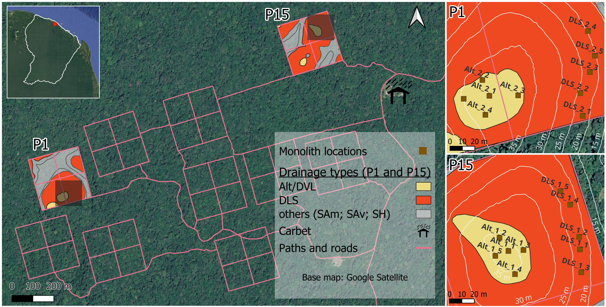

Effects of soil layers and drainage types on macrofaunal community composition and density
Abstract
Soil macrofauna is essential to the functioning of ecosystems, with complex interactions between the soil and its fauna. Rainforests host one of the largest soil macrofauna diversities in the world. Nevertheless, tropical soil macrofauna and its interdependence with soil properties remain severely understudied. Therefore, this study aims to explore the distribution of soil taxa along soil layers and drainage types. At Paracou, French Guiana, we studied abundance and community composition between soil layers and drainage types, with attention to ecosystem-engineering taxa (ants, termites, earthworms). 20 monoliths (TSBF method; litter, 0-10 and 10-20 cm layers) were sampled in well-drained (Alt/DVD) and laterally drained (SLD) soils, sorting 2,187 individuals into 27 coarse taxonomic groups. Total abundance was highest in the 0-10 cm layer which was reflected by ant and termite abundances (GLMM). 16.3% of compositional variation was explained by layer (PERMANOVA). Soil drainage type had no effect on abundance or composition. Depth clearly structured communities and should be accounted for when investigating other drivers. Further soil types and variables should be tested to understand effects of soil drainage on macrofaunal communities.
Keywords
soil macrofauna, community composition, soil drainage, Paracou, Amazon forest, soil ecology
1 Introduction
Tropical rainforests cover a small portion of the Earth’s land surface but house a disproportionately large portion of the world’s biodiversity, both above and below ground (Chen et al., 2023; Hu et al., 2022; Myers et al., 2000). This biodiversity includes trees but also soil organisms, including microbial communities and edaphic fauna, all of which play a significant role in ecosystem functioning (Bever et al., 2010; Robinson et al., 2024; Van Langenhove et al., 2021).
Soils support approximately 50% of global animal biomass (Fierer et al., 2009), with ants, termites and earthworms among the dominant groups (Lavelle et al., 2022). Soil macrofaunal community composition is known to be influenced by vegetation cover, litter quality, forest type, soil structure and physicochemical properties (Collison et al., 2013; Ferrín et al., 2026; Lavelle et al., 1992; Lavelle et al., 2022; Loranger-Merciris et al., 2007; Ramos et al., 2025; Vasconcellos et al., 2013).
Soil texture accounts for 3.9% of the variation in soil macrofaunal community structure at the global scale (Lavelle et al., 2022). Macrofauna is also distributed according to size within soil pores + further reading is needed on the texture and preferences of macrofauna in general (Velazco et al., 2023). The few studies carried out in tropical environments highlight a decline in the abundance of macrofauna from the litter layer down to deeper soil layers, with the highest abundance occurring between 0 and 10 cm due to a higher supply of organic matter at this depth (Castro et al., 2025; Ronchi et al., 2022; Fragoso1992?). Soil moisture also influences community composition. In the central Amazon, ant abundance and diversity decrease where the water table remains close to the soil surface for prolonged periods (Baccaro et al., 2013). Similarly, termite assemblages in French Guianan primary forests vary along moisture gradients, with swamp and lowland forests harbouring distinct communities from well-drained forests (Bourguignon et al., 2010). However, biotic interactions also play a role: ants’ predation on termites leads to a niche differentiation between the two species (Tuma et al., 2020).
Conversely, soil macrofauna can modify soil properties, including aggregate structure, porosity and hydraulic conductivity. Soil bioengineers are organisms that physically and chemically modify their environment through resource acquisition and habitat construction. Ants, termites and earthworms act as: bioturbators, redistributing soil particles and creating galleries; aggregate modifiers, through processes such as earthworm cast production; and mineral transformers (Bottinelli et al., 2015). In Amazonian terra firme forests, ants and termites account for approximately one-third of soil animal biomass (Fittkau & Klinge, 1973). Their engineering activities can substantially modify soil properties (Bottinelli et al., 2015; Lavelle et al., 1992). Gallery or nest construction by ants, earthworms and termites increases macroporosity, and enhances hydraulic conductivity and habitat heterogeneity in the soil (Capowiez et al., 2024; Cheik et al., 2019; Lavelle et al., 1992; Marichal et al., 2014; Pham et al., 2023). Earthworms also modify aggregate-size distributions in topsoil and redistribute plant debris towards deeper soil horizons through bioturbation (Zhukova & Mytiai, 2022).
More than 100 termite species have been recorded in French Guiana (Bourguignon et al., 2010), highlighting the high diversity of soil engineers in this region. However, the spatial distribution of soil macrofauna in undisturbed tropical rainforests remains poorly documented. According to the principle of competitive exclusion, stable coexistence requires niche differentiation when species compete for limited resources (Chesson, 2000; Hardin, 1960): differences in soil properties can promote distinct ecological niches among taxa, which could contribute to their coexistence. We therefore hypothesise that soil type and ressources provided contributes to the spatial differentiation of macrofaunal taxa and may help explain their coexistence. We hypothesize that there is a
Although tropical forest ecosystems harbor the greatest abundance and diversity of soil organisms (Lavelle et al., 2022) and French Guiana is recognised for its high diversity of soil engineers (Bourguignon et al., 2010), the spatial distribution of soil macrofauna in undisturbed rainforests is underdocumented.
Juju : According to the principle of competitive exclusion, stable coexistence requires niche differentiation when species compete for limited resources (Chesson, 2000; Hardin, 1960): differences in soil properties can promote distinct ecological niches among taxa. We therefore hypothesise that soil type and its layers contribute to the spatial differentiation of macrofauna taxa, owing to a varied soil texture that generates different resources and physico-chemical properties. Based on their diet and the environmental filter created by soil depth, we generally expect maximum abundance in the 0–10 cm layer, with ants being over-represented in the litter layer and termites and earthworms in the 0–10 cm layer. [(Fragoso1992?); Ronchi et al. (2022) ; Castro2024]. A well-drained soil with high infiltration rates will show more abundances, particularly in earthworm, ants and termite, due to their roles as bioturbations (Bottinelli et al., 2015; Cheik et al., 2019; Zhukova & Mytiai, 2022; Bourgignon2010?). To this end, the TSBF protocol is used for free lateral drainage and vertical drainage at three depth levels at two sites in Paracou. Identification is carried out at the taxonomic family level. The data are analysed using principal component analysis (PCA) and generalised linear mixed models (GLMM), and the communities are compared using the Permanova method. We first examine the set of taxa as a whole, then analyse the bio-engineers (termites, ants and earthworms) separately.
Juju : According to the principle of competitive exclusion, stable coexistence requires niche differentiation when species compete for limited resources (Chesson, 2000; Hardin, 1960): differences in soil properties can promote distinct ecological niches among taxa. We therefore hypothesise that soil type and its layers contribute to the spatial differentiation of macrofauna taxa, owing to a varied soil texture that generates different resources and physico-chemical properties. Based on their diet and the environmental filter created by soil depth, we generally expect maximum abundance in the 0–10 cm layer, with ants being over-represented in the litter layer and termites and earthworms in the 0–10 cm layer. [(Fragoso1992?); Ronchi et al. (2022) ; Castro2024]. A well-drained soil with high infiltration rates will show more abundances, particularly in earthworm, ants and termite, due to their roles as bioturbations (Bottinelli et al., 2015; Bourguignon et al., 2010; Cheik et al., 2019; Zhukova & Mytiai, 2022). To this end, the TSBF protocol is used for free lateral drainage and vertical drainage at three depth levels at two sites in Paracou. Identification is carried out at the taxonomic family level. The data are analysed using principal component analysis (PCA) and generalised linear mixed models (GLMM), and the communities are compared using the Permanova method. We first examine the set of taxa as a whole, then analyse the bio-engineers (termites, ants and earthworms) separately.
This study aims therefore to investigate whether soil macrofaunal abundance and community composition differ between soils with different drainage types and among soil layers in the undisturbed tropical rainforest of Paracou, French Guiana, paying particular attention to ecosystem-engineering taxa.
Following niche partitioning theory (Chesson, 2000; Hardin, 1960), differences in soil properties can generate distinct niches among taxa. We therefore hypothesise that (1) macrofaunal abundance is highest in the 0-10 cm layer, with ants concentrated in the litter layer and termites and earthworms in the 0-10 cm layer (Castro et al., 2025; Ronchi et al., 2022; Fragoso1992?); (2) abundance is higher in well-drained soil types (Alt/DVD), particularly for ants, termites and earthworms, and community composition differs from poorly drained soils (SLD) (Bottinelli et al., 2015; Bourguignon et al., 2010; Cheik et al., 2019; Zhukova & Mytiai, 2022).
2 Material and Methods
2.1 Study Site
Geographic Location
This study was conducted at the Paracou Research Station (5°16′38″N, 52°55′38″W), in Amazonian primary tropical forest. The average air temperature is 25.7 °C ± 0.1 °C (from 2004 to 2014). Average annual rainfall is 3,102 mm ± 70 mm, with heavy rains during the wet season from December to July (between 300 and 500 mm per month) and a long dry season from mid-August to mid-November (< 100 mm per month). A permanent forest dynamic experiment was established at Paracou in 1984. The site comprises 15 plots measuring 250 × 250 m² (6.25 ha) and one plot measuring 500 × 500 m² (25 ha). Our experiment was carried-out in two of the unlogged control plots: Plot 1 (P1), installed in 1984, and Plot 15 (P15) installed in 1990 (Gourlet-Fleury et al., 2004). The geological substratum of Paracou consists primarily of Precambrian schists intruded by pegmatite veins, belonging to the metamorphic Bonidoro Series (Choubert, 1974). The site exhibits a relatively low elevation (5 to 50 m a.s.l.), dissected by deep drainage gullies flowing into the Sinnamary River (Gourlet-Fleury et al., 2004).
Soil Characteristics of Paracou
The predominant soils are nutrient-poor Acrisols (sesquioxide, kaolinite and gibbsite) (Driessen et al., 2001; FAO et al., 1998), characterized by a shallow depth delimited by a partially transformed loamy saprolite (Gourlet-Fleury et al., 2004).
Soil distribution and drainage vary strongly in Paracou, influenced by the topographic gradient, as has been shown by prior mappings (Roelens, 2007; Soucémarianadin, 2004; Weigel, 2006). According to (Soucemarinanadin2004?), Plot 1 comprised of 45 % Superficial Lateral Drainage (SLD), 35 % Surface Hydromorphy (SH), 15 % Downhill System (DhS), and 5 % Deep Vertical Drainage/altered phase (Alt/DVD). Meanwhile, soils of P15 are comprised of 60 % SLD, 20 % DhS, 15 % SH and 5 % Alt/DVD.
This study focuses on two soil types present at Paracou, namely soils with Superficial Lateral Drainage (SLD) and Deep Vertical Drainage/altered phase (Alt/DVD). Alt/DVD are a type of well-drained soils (hypoferralic acrisols) located on flat hilltops or plateaus and feature a thick ferralitic cover that lets rainwater percolate freely and deeply. The altered phase (Alt) begins where red, muscovite-rich alloterite appears above 1.2 m depth,signaling initial soil thinning (Sabatier et al., 1997). Plateau soils contain higher levels of carbon, nitrogen, and aluminum (Allié et al., 2015), support greater root biomass and soil respiration (Epron et al., 2006), and host nearly half of the local tree species in Paracou (Allié et al., 2015).
Superficial Lateral Drainage soils (SLD) are found on mid-slopes, these soils reflect a more advanced thinning and compaction of the ferralitic cover. Because deep percolation is blocked, water flows laterally and near the surface (Sabatier et al., 1997). Compared to plateau soils, these slope soils have higher bulk density and surface moisture, but lower organic carbon, root biomass, and soil respiration (Epron et al., 2006).
2.2 Sampling and Identification
Soil Type Verification
Prior to macrofauna sampling, field checks were carried out to confirm the pedological classification of our sampling sites. Auger drillings were performed to assess soil color and texture (Boulet et al., 1979; Sabatier et al., 1997). Additionally, silt and clay contents were confirmed through granulometric analysis conducted by the laboratory SADEF. Furthermore, saturated hydraulic conductivity was determined in situ using the simplified Beerkan infiltration method (Lassabatère et al., 2006).
Marofaunal Sampling
Five macrofauna samples were collected in each soil type (Alt/DVD and SLD) per plot (P1 and P15) using the Tropical Soil Biology and Fertility (TSBF) method by Anderson & Ingram (1994).
Alt/DVD (hilltop) samples were arranged in a standard cross-pattern, whereas SLD (mid-slope) samples were aligned along a transect following the slope to account for the topography. All sampling points were spaced at least 10 m apart to reduce spatial dependence of macrofauna samples (see Appendix Figure 4 for spatial representation).
A 25 × 25 × 10 cm metal frame was placed on the ground at for each sample . First, the litter (L) was quickly removed, to avoid fauna escape, and collected in a labeled bag. Next, the frame was pressed 10 cm deep into the soil to isolate a soil block (called a monolith). This process was performed twice to collect the soil layers of 0 to 10 cm (10) and 10 to 20 cm (20) depth which were also collected in separate bags.
Sample Sorting and Identification
Samples were manually sorted at the field station and litter samples (L) processed first to avoid macrofauna escaping. Soil was sorted by transferring around 200 g of substrate into a container. Each portion was observed for an average of 2 minutes. Macrofauna was collected using a brush and stored in 90 % ethanol, separated according to monolith and layer of soil. Subsequently, the organisms were identified on a coarse taxonomic level (refer to the data file in Section 7 for details), with ants (Formicidae) and termites (Isoptera) treated separately from other Hymenoptera and Blattodea.
In total, 60 samples were collected (2 plots x 2 soils x 5 monoliths x 3 layers) and 27 groups of macrofauna were identified and unidentified individuals grouped as “indet”, yielding a total of 2187 individuals.
2.3 Statistical analysis
All analyses was performed using R version 4.6.1 (R Core Team, 2026). Plotting and data processing relied largely on the tidyverse package (Wickham et al., 2019; Wickham, 2023). A complete list of citations with all R packages used is available in Section 7.
Explorative Analysis
Counts were converted to densities (individuals per m²) in proportion the surface of a monolith (25 × 25 cm = 0.0625 m²). Since densities were very uneven, with many low values and a few very high ones, the figures use a pseudo-logarithmic scale, which keeps zero values on the axis. Box plots of abundances of the different taxa by layers and type of soil were realized as well as Principal Component Analysis (PCA) with Hellinger transformation.
Abundances (Generalized Linear Mixed Models)
Models were fitted to raw counts per monolith layer. Because all samples covered the same area (0.0625 m²), no offset was required. Effects of soil drainage type and soil layers on abundances were analyzed using Generalized Linear Mixed Models (GLMMs), fitted with the glmmTMB package (M. Brooks et al., 2026; M. E. Brooks et al., 2017). To account spatial structure, monoliths were included as a random effect. Since count data was treated, Poisson and negative binomial (NB2) were tested. Model selection relied on Akaike’s Information Criterion (AIC), Likelihood-ratio testing (LRT) and model diagnostics using DHARMa residuals (Hartig, 2026). Refer to Section 7 for detailed model selection and diagnostic plots.
Type II Wald \(\chi^2\) tests from the package car (Fox et al., 2026; Fox & Weisberg, 2019) were used to evaluate overall predictor effects. Estimated marginal means and Tukey pairwise comparisons were generated using emmeans (Lenth & Piaskowski, 2026).
Community Composition (PERMANOVA)
Community composition variation was analyzed using Permutational Multivariate Analysis of Variance (PERMANOVA) with a Bray-Curtis distance matrix. PERMANOVA was performed using adonis2 from the vegan package (Oksanen et al., 2026). Homogeneity of multivariate dispersion was verified using betadisper and permutest from the same package. One zero abundance layer observation (DLS_2_4_L) was removed, following the recommendations of the vegan handbook (Oksanen et al., 2026), since it does not carry any compositional information for this analysis.
Since monolith layers are not spatially independent, soil type and soil layer effects were evaluated separately. Layers were collapsed per monolith for the soil type PERMANOVA. To test the effect of soil layer, permutations were restricted within monoliths using the permute package (Simpson, 2026). This accounts for the spatial dependence of layers from the same monolith since it ensures that observations were not permuted between monoliths. P-values were adjusted for multiple comparisons using the Bonferroni correction.
For visualizing community composition variation patterns, Principal Coordinates Analysis (PCoA) was used with the same distance matrix. Cailliez correction for negative eigenvalues was applied.
To fit taxa significantly associated with the ordination, envfit from the vegan package (Oksanen et al., 2026) was used. P-values were adjusted applying Benjamini-Hochberg correction to control False Discovery Rate.
2.4 Spatial Representation
Monolith locations were reconstructed using R (R Core Team, 2026) and the sf package (Pebesma, 2018; Pebesma & Bivand, 2023). Coordinates were obtained (script available in Section 7) based on distance and azimuth in relation to reference trees and their coordinates sourced from Paracou inventory data (Derroire et al., 2026a, 2026b). QGIS (QGIS Development Team, 2024) was used for spatial representation.
3 Results
3.1 Macrofauna abundance
Global Abundance
| Response | Distribution | Predictor | Chi-square | df | p-value |
|---|---|---|---|---|---|
| soil_type | 0.52 | 1 | 0.46933 | ||
| layer | 106.85 | 2 | <0.0001*** | ||
| soil_type | 0.48 | 1 | 0.48633 | ||
| layer | 28.00 | 2 | <0.0001*** | ||
| soil_type | 0.89 | 1 | 0.34664 | ||
| layer | 36.56 | 2 | <0.0001*** | ||
| soil_type | 0.35 | 1 | 0.55692 | ||
| layer | 12.69 | 2 | 0.00176** | ||
| Type II Wald Chi-square tests. All models included soil type and soil layer as fixed effects and monolith ID as a random intercept. Significance levels: * p < 0.05; ** p < 0.01; *** p < 0.001 | |||||
| Taxon | Comparison | Abundance ratio | z-ratio | Adjusted p-value |
|---|---|---|---|---|
| Total macrofauna | L - 10 | 0.13 | -9.12 | <0.0001*** |
| L - 20 | 0.83 | -0.78 | 0.713689 | |
| 10 - 20 | 6.18 | 8.34 | <0.0001*** | |
| Ants (Formicidae) | L - 10 | 0.20 | -4.96 | <0.0001*** |
| L - 20 | 0.65 | -1.29 | 0.399482 | |
| 10 - 20 | 3.27 | 3.84 | 0.000363*** | |
| Termites (Isoptera) | L - 10 | 0.06 | -4.06 | 0.000145*** |
| L - 20 | 41.23 | 3.01 | 0.007262** | |
| 10 - 20 | 745.48 | 5.42 | <0.0001*** | |
| Abundance ratios are exponentiated log-scale contrasts. Significance levels: * p < 0.05; ** p < 0.01; *** p < 0.001. P-values adjusted using the Tukey method within each taxon. | ||||
Total macrofauna density varied mostly with soil layer (Figure 1). Type II Wald \(\chi^2\) tests revealed a highly significant effect of soil layer on total soil macrofauna abundance (\(\chi^2\) = 106.85, df = 2, p < 0.001). The effect of soil type was not significant (\(\chi^2\) = 0.52, df = 1, p = 0.469). Estimated random-effect variance (monolith) was 0.437 (SD = 0.661), indicating variation in baseline macrofauna abundance among monoliths.
Pairwise comparisons with Tukey adjustment (Table 2) showed that macrofauna abundance was significantly higher in layer 10 than in layers L (7.42 times) and 20 (6.18 times), while no significant difference was found between layers L and 20 (p = 0.714).
Formicidae
Type II Wald \(\chi^2\) tests revealed a significant effect of soil layer on ant abundance (\(\chi^2\) = 28.00, df = 2, p < 0.001). The effect of soil type was not significant (\(\chi^2\) = 0.48, df = 1, p = 0.486). The estimated random-effect variance for monolith was 0.655 (SD = 0.810), indicating variation in baseline ant abundance among monoliths. Quantile deviation was detected in the DHARMa residuals for the presented model. Specifically, upper quantile deviated significantly and thus relatively high-abundance observations may not be adequately captured by the model. Since the diagnostics did not indicate deviations regarding dispersion, zero-inflation, uniformity as well outliers, and the model has the best AIC support, it was retained, regardless.
Pairwise comparisons with Tukey adjustment (Table 2) showed that ant abundance was significantly higher in layer 10 than in layer L (5.05 times) and layer 20 (3.27 times), while no significant difference wasfound between layers L and 20 (p = 0.3995).
Isoptera
Type II Wald \(\chi^2\) tests revealed a highly significant effect of soil layer on termite abundance (\(\chi^2\) = 36.56, df = 2, p < 0.001).The effect of soil type was not significant (\(\chi^2\) = 0.89, df = 1, p = 0.347). The estimated random-effect variance for monolith was effectively zero (\(8.22 \times 10^{-9}\); SD = 0.00009), indicating virtually no remaining variation in baseline termite abundance among monoliths after accounting for the fixed effects.
Pairwise comparisons with Tukey adjustment (Table 2) showed that termite abundance was significantly higher in layer 10 than in layer L (18.08 times) and layer 20 (745.48 times; estimated abundance for 20 nearing zero). Abundance was also significantly higher in layer L than in layer 20 (41.23 times; all \(p \leq 0.0073\)).
Lumbricina Oligochaetes
Type II Wald \(\chi^2\) tests indicated a significant effect of soil layer on earthworm abundance (\(\chi^2\) = 12.69, df = 2, p = 0.0018),whereas soil type had no significant effect (\(\chi^2\) = 0.35, df = 1, p = 0.557). Pairwise comparisons showed significantly higher earthworm abundance in layer 10 compared to layer 20 (2.31 times higher). As no earthworms were recorded in layer L, no pairwise comparisons were made between the litter and layers 10 and 20. The Estimated random-effect variance for monoliths was 0.510 (SD = 0.714).
For density boxplots for Formicidae, Isoptera and Lumbricina oligochaetes, see Appendix Figure 5.
3.2 Community composition
Community composition varied visibly more among soil layers than between soil types (Figure 2). Lumbricina were absent from the litter in both soil types. The relative proportions of Isoptera and Formicidae appeared to differ between soil types: Isoptera were more abundant in Alt/DVD, whereas Formicidae represented a larger proportion in SLD. Two groups dominated the 0-10 cm layer in both soil types: Isoptera and Formicidae each made up for approximately half of the relative composition of both soil types. Earthworms (Lumbricina) represented a small part therein (~2% and ~5%). In the 10-20 cm layer, Isoptera were nearly absent (0 % in Alt/DVD and 1% in SLD) and Formicidae dominated, representing about 70% of individuals. Lumbricina represented around 9% and 11% of individuals in Alt/DVD and SLD, respectively, while all remaining taxa combined accounted for approximately 18%.
An exploratory PCA macrofaunal abundances is provided in the Appendix (Figure 6).

PERMANOVA did not show a significant difference in macrofaunal community composition between soil types (F = 1.68, R² = 0.085, p = 0.139). The test for homogeneity of multivariate dispersion was also non-significant (F = 0.11, p = 0.742), indicating no detectable difference in within-group dispersion between soil types. Layers were aggregated per monolith to account for spatial dependence.
PERMANOVA revealed a significant effect of soil layer on macrofauna community composition (Bray–Curtis dissimilarity: F = 5.46, R² = 0.163,p = 0.0001). Soil layer explained around 16.3% of variation in the community composition, indicating that macrofauna community composition differed significantly among layers. Permutation was restricted within monolith to account for spatial dependence of layers. Homogeneity of multivariate dispersion was assessed using a permutation test based on betadisper. No significant differences in dispersion were detected for soil layers (F = 0.75, p = 0.321).
Pairwise PERMANOVA suggests significant differences in macrofauna community composition for all soil layers (Table 3). Significant differences were observed between L and 10 (F = 6.05, R² = 0.141, adjusted p = 0.0003), L and 20 (F = 4.55, R² = 0.110, adjusted p = 0.0003), and 10 and 20 (F = 5.76, R² = 0.132, adjusted p = 0.0021), using Bonferroni correction.
In the Principal Coordinates Analysis (PCoA) based on Bray Curtis dissimilarities (Figure 3), the first two axes explained 26.1% of the corrected total variance (15.8% for PCoA1 and 10.3% for PCoA2). Convex hulls overlapped substantially in the projection. A part of samples from the 10 cm layer extends toward positive PCoA1 values and shows less overlap. Vector fitting onto the PCoA ordination identified four taxa significantly correlated with the ordination space (P_adj < 0.05, Benjamini–Hochberg corrected): Isoptera, Opiliones, Chilopoda, and Lumbricina oligochaetes. All four vectors pointed toward positive PCoA1 scores, indicating that higher abundances of these taxa are associated with the separation of these 10 cm layer samples along the first axis.
| Comparison | F-statistic | R² | Adjusted p-value |
|---|---|---|---|
| L - 10 | 6.05 | 0.141 | 0.0003*** |
| L - 20 | 4.55 | 0.110 | 0.0003*** |
| 10 - 20 | 5.76 | 0.132 | 0.0021** |
| Significance levels: * p < 0.05; ** p < 0.01; *** p < 0.001; p-values adjusted using Bonferroni method | |||

4 Discussion
%%% TEXT - no differences in densities or community composition for soil types (argue about same vegetation cover etc.) - clear differences in both for layers (connect to literature knowledge)
en gros : Nos identifications montrent une dominance des bio ingénieurs du sol dans nos relevés (chiffre). Ils ne se répartissent pas selon le type de sol, donc pas d’effet sur le drainage, mais plutot selon leur capacité à prendre les ressources ? + toutes les études montrent que c’est le couvert végétal et qualité litière qui influence le plus Collison et al. (2013) alors faudrai à l’avenir se focus sur couvert végé + régime.
This initial study of the macrofauna of Paracou enables us to confirm the great richness of its soils ??? ask Raph
Contrary to our expectations, the type of water drainage and particle size distribution did not explain the specific distribution of our taxa in the soils of Paracou. The results show the same trends for taxa in general and when bioengineers are considered in isolation. We therefore do not confirm the findings of (Lavelle et al., 2022): soil texture does not influence the abundance of taxa in the soils of Paracou. In our study, only the soil layer determines this difference in abundance (figure), and as expected, the 0–10 cm layer is the most abundant (chiffres), both generally and for bioengineers (chiffres). Thus, the hypotheses of environmental filters and resource-based distribution appear more plausible. Indeed, studies showing differentiation between soil layers highlight a distribution based on dietary regimes and ecological strategies, rather than on soil texture. For example, earthworms are classified as epigeic, inhabiting the litter layer; endogeic, living within mineral soil horizons; and anecic, constructing deep burrows whilst feeding at the soil surface (Bouché, 1977). Depending on their diet, ants are more abundant in the litter layer, whilst termites and worms are more prevalent at a depth of 0–10 cm (Castro et al., 2025; Ronchi et al., 2022).
5 Conclusion
%%% TEXT Il faut se focus sur couvert végé + régime si on veit étudier la macrofaune à Paracou. Le TSBF bien mais attention on perd bcp. On a clairement pas assez d’échantillon.
6 Acknowledgements
%%% TEXT
7 Supplementary Material
Supplementary material, including detailed statistical analysis, scripts, data, QGIS layers, additional software attribution as well as the Quarto file used to produce this article, is available from https://github.com/jasonberger2002/FTH_2026_soil_macrofauna.
References
Allié, E., Pélissier, R., Engel, J., Petronelli, P., Freycon, V., Deblauwe, V., Soucémarianadin, L., Weigel, J., & Baraloto, C. (2015). Pervasive Local-Scale Tree-Soil Habitat Association in a Tropical Forest Community. PLOS ONE, 10(11), e0141488. https://doi.org/10.1371/journal.pone.0141488
Anderson, J., & Ingram, J. (1994). Tropical Soil Biology and Fertility: A Handbook of Methods. Soil Science, 157, 265. https://doi.org/10.2307/2261129
Baccaro, F. B., Rocha, I. F., Del Aguila, B. E. G., Schietti, J., Emilio, T., Pinto, J. L. P. D. V., Lima, A. P., & Magnusson, W. E. (2013). Changes in Ground-dwelling Ant Functional Diversity are Correlated with Water-Table Level in an Amazonian Terra Firme Forest. Biotropica, 45(6), 755–763. https://doi.org/10.1111/btp.12055
Bever, J. D., Dickie, I. A., Facelli, E., Facelli, J. M., Klironomos, J., Moora, M., Rillig, M. C., Stock, W. D., Tibbett, M., & Zobel, M. (2010). Rooting theories of plant community ecology in microbial interactions. Trends in Ecology & Evolution, 25(8), 468–478. https://doi.org/10.1016/j.tree.2010.05.004
Bottinelli, N., Jouquet, P., Capowiez, Y., Podwojewski, P., Grimaldi, M., & Peng, X. (2015). Why is the influence of soil macrofauna on soil structure only considered by soil ecologists? Soil and Tillage Research, 146, 118–124. https://doi.org/10.1016/j.still.2014.01.007
Bouché, M. B. (1977). Strategies lombriciennes. Ecological Bulletins, (25), 122–132. https://www.jstor.org/stable/20112572
Boulet, R., Brugière, J.-M., & Humbel, F.-X. (1979). Relations entre organisation des sols et dynamique de l’eau en Guyane française septentrionale : Conséquences agronomiques d’une évolution déterminée par un déséquilibre d’origine principalement tectonique. Science du Sol : Bulletin de l’AFES, (1).
Bourguignon, T., Leponce, M., & Roisin, Y. (2010). Beta-Diversity of Termite Assemblages Among Primary French Guiana Rain Forests: Termite Assemblages Among Primary Rain Forests. Biotropica, 43(4), 473–479. https://doi.org/10.1111/j.1744-7429.2010.00729.x
Brooks, M. E., Kristensen, K., van Benthem, K. J., Magnusson, A., Berg, C. W., Nielsen, A., Skaug, H. J., Maechler, M., & Bolker, B. M. (2017). glmmTMB balances speed and flexibility among packages for zero-inflated generalized linear mixed modeling. The R Journal, 9(2), 378–400. https://doi.org/10.32614/RJ-2017-066
Brooks, M., Bolker, B., Kristensen, K., Maechler, M., Magnusson, A., Skaug, H., Nielsen, A., Berg, C., & van Bentham, K. (2026). glmmTMB: Generalized linear mixed models using template model builder [Manual].
Capowiez, Y., Marchán, D., Decaëns, T., Hedde, M., & Bottinelli, N. (2024). Let earthworms be functional - Definition of new functional groups based on their bioturbation behavior. Soil Biology and Biochemistry, 188, 109209. https://doi.org/10.1016/j.soilbio.2023.109209
Castro, D., Peña-Venegas, C. P., Rodríguez-León, C. H., Duran-Bautista, E. H., & Sterling, A. (2025). Soil macroarthropod communities of Amazon degraded pastures restore differently during their natural regrowth. Nature Conservation, 58, 195–225. https://doi.org/10.3897/natureconservation.58.136370
Cheik, S., Bottinelli, N., Minh, T. T., Doan, T. T., & Jouquet, P. (2019). Quantification of Three Dimensional Characteristics of Macrofauna Macropores and Their Effects on Soil Hydraulic Conductivity in Northern Vietnam. Frontiers in Environmental Science, 7, 31. https://doi.org/10.3389/fenvs.2019.00031
Chen, Y., Huang, X., Lang, X., Tang, R., Zhang, R., Li, S., & Su, J. (2023). Effects of plant diversity, soil microbial diversity, and network complexity on ecosystem multifunctionality in a tropical rainforest. Frontiers in Plant Science, 14. https://doi.org/10.3389/fpls.2023.1238056
Chesson, P. (2000). General Theory of Competitive Coexistence in Spatially-Varying Environments. Theoretical Population Biology, 58(3), 211–237. https://doi.org/10.1006/tpbi.2000.1486
Choubert, B. (1974). Le précambrien des Guyanes. Éditions B.R.G.M.
Collison, E. J., Riutta, T., & Slade, E. M. (2013). Macrofauna assemblage composition and soil moisture interact to affect soil ecosystem functions. Acta Oecologica, 47, 30–36. https://doi.org/10.1016/j.actao.2012.12.002
Derroire, G., Hérault, B., Rossi, V., Blanc, L., Gourlet-Fleury, S., Schmitt, L., & Guyane, C. (2026a). Paracou Biodiversity Plots. CIRAD Dataverse. https://doi.org/10.18167/DVN1/NSCWF0
Derroire, G., Hérault, B., Rossi, V., Blanc, L., Gourlet-Fleury, S., Schmitt, L., & Guyane, C. (2026b). Paracou Disturbance Experiment - Control Plots. CIRAD Dataverse. https://doi.org/10.18167/DVN1/Q8V2YI
Driessen, P., Deckers, J., Spaargaren, O., & Nachtergaele, F. (2001). Lecture Notes on the Major Soils of the World. In World Soil Resources Reports (Vol. 94).
Epron, D., Bosc, A., Bonal, D., & Freycon, V. (2006). Spatial variation of soil respiration across a topographic gradient in a tropical rain forest in French Guiana. Journal of Tropical Ecology, 22(5), 565–574. https://doi.org/10.1017/S0266467406003415
FAO, ISRIC, & ISSS. (1998). World reference base for soil resources. https://www.fao.org/4/w8594e/w8594e00.htm.
Ferrín, M., Peñuelas, J., Asensio, D., Bréchet, L., Fernàndez, P., Fuchslueger, L., Gargallo-Garriga, A., Lugli, L. F., Llusià, J., Márquez, L., Murienne, J., Ogaya, R., Orivel, J., Sardans, J., Vallicrosa, H., Janssens, I. A., & Peguero, G. (2026). Beyond N and P fertilization: Tropical ground hexapod communities are tied to micronutrients. Applied Soil Ecology, 217, 106604. https://doi.org/10.1016/j.apsoil.2025.106604
Fierer, N., Strickland, M. S., Liptzin, D., Bradford, M. A., & Cleveland, C. C. (2009). Global patterns in belowground communities. Ecology Letters, 12(11), 1238–1249. https://doi.org/10.1111/j.1461-0248.2009.01360.x
Fittkau, E. J., & Klinge, H. (1973). On Biomass and Trophic Structure of the Central Amazonian Rain Forest Ecosystem. Biotropica, 5(1), 2. https://doi.org/10.2307/2989676
Fox, J., & Weisberg, S. (2019). An R companion to applied regression (3rd ed.). Sage.
Fox, J., Weisberg, S., & Price, B. (2026). Car: Companion to applied regression [Manual].
Gourlet-Fleury, S., Ferry, B., Molino, J. F., Petronelli, P., & Schmitt, L. (2004). Experimental plots : Key features. In Ecology and management of a neotropical rainforest : Lessons drawn from Paracou, a long-term experimental research site in French Guiana / Gourlet-Fleury Sylvie (ed.), Guehl Jean-Marc (ed.), Laroussinie Olivier (ed.) (pp. 3–60). Elsevier.
Hardin, G. (1960). The Competitive Exclusion Principle. Science, 131(3409), 1292–1297. https://doi.org/10.1126/science.131.3409.1292
Hartig, F. (2026). DHARMa: Residual diagnostics for hierarchical (multi-level / mixed) regression models [Manual].
Hu, X., Shu, Q., Guo, W., Shang, Z., & Qi, L. (2022). Secondary Succession Altered the Diversity and Co-Occurrence Networks of the Soil Bacterial Communities in Tropical Lowland Rainforests. Plants, 11(10), 1344. https://doi.org/10.3390/plants11101344
Lassabatère, L., Angulo-Jaramillo, R., Ugalde, J. M. S., Cuenca, R., Braud, I., & Haverkamp, R. (2006). Beerkan estimation of soil transfer parameters through infiltration experiments-BEST. Soil Science Society of America Journal, 70, 521. https://doi.org/10.2136/sssaj2005.0026
Lavelle, P., Mathieu, J., Spain, A., Brown, G., Fragoso, C., Lapied, E., De Aquino, A., Barois, I., Barrios, E., Barros, M. E., Bedano, J. C., Blanchart, E., Caulfield, M., Chagueza, Y., Dai, J., Decaëns, T., Dominguez, A., Dominguez, Y., Feijoo, A., … Zhang, C. (2022). Soil macroinvertebrate communities: A world-wide assessment. Global Ecology and Biogeography, 31(7), 1261–1276. https://doi.org/10.1111/geb.13492
Lavelle, P., Blanchart, E., Martin, A., Spain, A. V., & Martin, S. (1992). Impact of Soil Fauna on the Properties of Soils in the Humid Tropics. In R. Lal & P. A. Sanchez (Eds.), Myths and Science of Soils of the Tropics (1st ed., Vol. 29, pp. 157–185). Wiley. https://doi.org/10.2136/sssaspecpub29.c9
Lenth, R. V., & Piaskowski, J. (2026). Emmeans: Estimated marginal means, aka least-squares means [Manual].
Loranger-Merciris, G., Imbert, D., Bernhard-Reversat, F., Ponge, J.-F., & Lavelle, P. (2007). Soil fauna abundance and diversity in a secondary semi-evergreen forest in Guadeloupe (Lesser Antilles): Influence of soil type and dominant tree species. Biology and Fertility of Soils, 44(2), 269–276. https://doi.org/10.1007/s00374-007-0199-5
Marichal, R., Grimaldi, M., Feijoo M., A., Oszwald, J., Praxedes, C., Ruiz Cobo, D. H., Del Pilar Hurtado, M., Desjardins, T., Silva Junior, M. L. D., Silva Costa, L. G. D., Miranda, I. S., Delgado Oliveira, M. N., Brown, G. G., Tsélouiko, S., Martins, M. B., Decaëns, T., Velasquez, E., & Lavelle, P. (2014). Soil macroinvertebrate communities and ecosystem services in deforested landscapes of Amazonia. Applied Soil Ecology, 83, 177–185. https://doi.org/10.1016/j.apsoil.2014.05.006
Myers, N., Mittermeier, R. A., Mittermeier, C. G., da Fonseca, G. A. B., & Kent, J. (2000). Biodiversity hotspots for conservation priorities. Nature, 403(6772), 853–858. https://doi.org/10.1038/35002501
Oksanen, J., Simpson, G. L., Blanchet, F. G., Kindt, R., Legendre, P., Minchin, P. R., O’Hara, R. B., Solymos, P., Stevens, M. H. H., Szoecs, E., Wagner, H., Bedward, M., Bolker, B., Borcard, D., Carvalho, G., De Caceres, M., Durand, S., Evangelista, H. B. A., Hannigan, G., … Weedon, J. (2026). Vegan: Community ecology package [Manual].
Pebesma, E. (2018). Simple features for R: Standardized support for spatial vector data. The R Journal, 10(1), 439–446. https://doi.org/10.32614/RJ-2018-009
Pebesma, E., & Bivand, R. (2023). Spatial data science: With applications in R. Chapman and Hall/CRC. https://doi.org/10.1201/9780429459016
Pham, Q. V., Nguyen, T. T., Lam, D. H., Capowiez, Y., Nguyen, A. D., Jouquet, P., Tran, T. M., & Bottinelli, N. (2023). Using morpho-anatomical traits to predict the effect of earthworms on soil water infiltration. Geoderma, 429, 116245. https://doi.org/10.1016/j.geoderma.2022.116245
QGIS Development Team. (2024). QGIS geographic information system. QGIS Association.
R Core Team. (2026). R: A language and environment for statistical computing [Manual]. R Foundation for Statistical Computing. https://doi.org/10.32614/R.manuals
Ramos, A. P. D., Lima, S. S. D., Ferreira, C. D. S., Pinto, L. A. R. D. S., Ferreira, R., Dias, A., Matos, P. S., & Pereira, M. G. (2025). Macrofauna and soil properties in agroforestry system and secondary forest. Revista Brasileira de Ciência do Solo, 49, e0240091. https://doi.org/10.36783/18069657rbcs20240091
Robinson, S. J. B., Elias, D. M. O., Goodall, T., Nottingham, A. T., McNamara, N. P., Griffiths, R., Majalap, N., & Ostle, N. J. (2024). Selective logging impacts on soil microbial communities and functioning in Bornean tropical forest. Frontiers in Microbiology, 15. https://doi.org/10.3389/fmicb.2024.1447999
Roelens, J.-B. (2007). Cartographie pédologique de six parcelles exploitées. Dispositif expérimental de Paracou, Guyane française (p. 25). CIRAD/UMR ECOFOG.
Ronchi, D. L., Schorn, L. A., Universidade Regional de Blumenau, Santos, K. F. D., Universidade Regional de Blumenau, & Vitorino, M. D. (2022). Soil macrofauna in areas with different successional vegetation stages after Eucalyptus grandis harvest in Brazil. Semina: Ciências Agrárias, 42(3), 1111–1126. https://doi.org/10.5433/1679-0359.2022v43n3p1111
Sabatier, D., Grimaldi, M., Prévost, M.-F., Guillaume, J., Godron, M., Dosso, M., & Curmi, P. (1997). The influence of soil cover organization on the floristic and structural heterogeneity of a Guianan rain forest. Plant Ecology, 131(1), 81–108. https://doi.org/10.1023/A:1009775025850
Simpson, G. L. (2026). Permute: Functions for generating restricted permutations of data [Manual].
Soucémarianadin, L. (2004). Recherche de critères du sol influançant la structure et la composition floristique d’une forêt tropicale humide (Paracou, Guyane française) [Master’s thesis]. École nationale supérieure agronomique de Rennes.
Tuma, J., Eggleton, P., & Fayle, T. M. (2020). Ant-termite interactions: An important but under-explored ecological linkage. Biological Reviews, 95(3), 555–572. https://doi.org/10.1111/brv.12577
Van Langenhove, L., Verryckt, L. T., Stahl, C., Courtois, E. A., Urbina, I., Grau, O., Asensio, D., Peguero, G., Margalef, O., Freycon, V., Peñuelas, J., & Janssens, I. A. (2021). Soil nutrient variation along a shallow catena in Paracou, French Guiana. Soil Research, 59(2), 130–145. https://doi.org/10.1071/SR20023
Vasconcellos, R. L. F., Segat, J. C., Bonfim, J. A., Baretta, D., & Cardoso, E. J. B. N. (2013). Soil macrofauna as an indicator of soil quality in an undisturbed riparian forest and recovering sites of different ages. European Journal of Soil Biology, 58, 105–112. https://doi.org/10.1016/j.ejsobi.2013.07.001
Velazco, V., Sandler, R., Sanabria, M. C. V., Falco, L., Coviella, C., & Saravia, L. (2023). Size spectra of the edaphic fauna of typical Argiudol soils of the Rolling Pampa Region, Argentina. Biodiversity Data Journal, 11, e113074. https://doi.org/10.3897/BDJ.11.e113074
Weigel, J. (2006). Cartographie pédologique de quatre parcelles témoin. Dispositif de Paracou, Guyane française (p. 31). ENGREF/UMR ECOFOG.
Wickham, H. (2023). Tidyverse: Easily install and load the tidyverse [Manual].
Wickham, H., Averick, M., Bryan, J., Chang, W., McGowan, L. D., François, R., Grolemund, G., Hayes, A., Henry, L., Hester, J., Kuhn, M., Pedersen, T. L., Miller, E., Bache, S. M., Müller, K., Ooms, J., Robinson, D., Seidel, D. P., Spinu, V., … Yutani, H. (2019). Welcome to the tidyverse. Journal of Open Source Software, 4(43), 1686. https://doi.org/10.21105/joss.01686
Zhukova, Y. O., & Mytiai, I. S. (2022). Spatial organization of the soil macrofauna community in a floodplain forest. IOP Conference Series: Earth and Environmental Science, 1049(1), 012064. https://doi.org/10.1088/1755-1315/1049/1/012064
Appendix


Additional exploratory analysis:
We ran a principal component analysis (PCA) on the abundances of all taxa to see whether samples from the two soil types differed in composition (Figure 6). The first two axes explained 33.2% and 18.6 % of the variance, so 51.8% together. PC1 opposed samples rich in Isoptera (right side) to samples dominated by Formicidae (left side). PC2 was mostly related to Lumbricina, which pointed toward the top of the plot. Formicidae and Isoptera were well represented on these two axes (high cos², which measures how well a taxon is represented by the axes), while Lumbricina were less well represented (lower cos²).
Alt/DVD and SLD samples were not separated on these two axes. The two ellipses overlapped almost completely, and samples of both soil types were found across the whole plot. We did not see a clear structure by soil layer either. Samples from the litter, the 0-10 cm layer and the 10-20 cm layer were mixed along both axes. The 10-20 cm samples were almost all in the left half of the plot which fit with the absence of isoptera at this depth, and the highest PC2 values were mostly from this layer, where earthworms were found. Overall, no clear trend could be taken out of it and they overlapped with many litter and 0-10 cm samples.